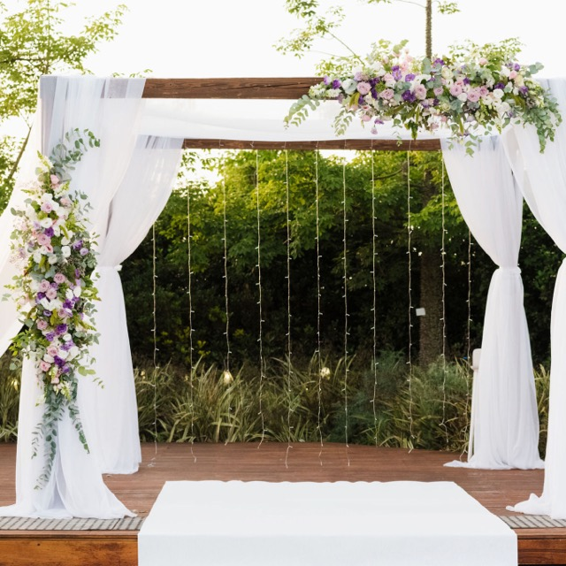
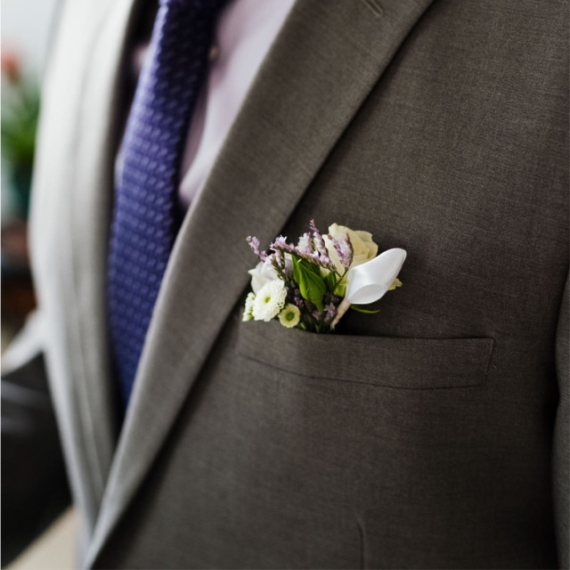
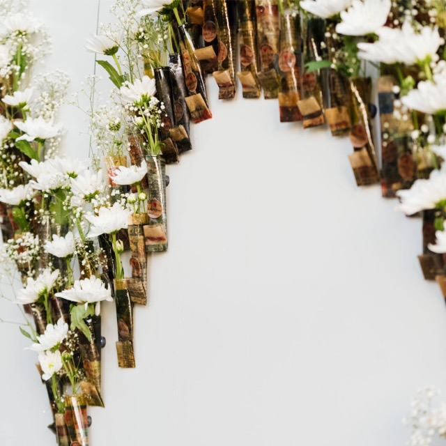
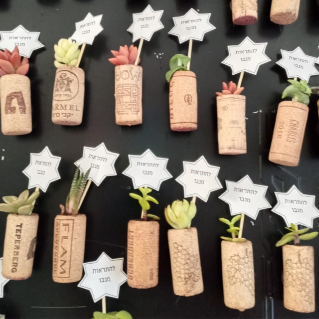
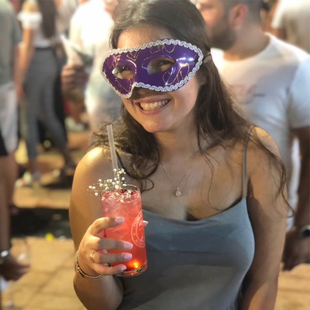
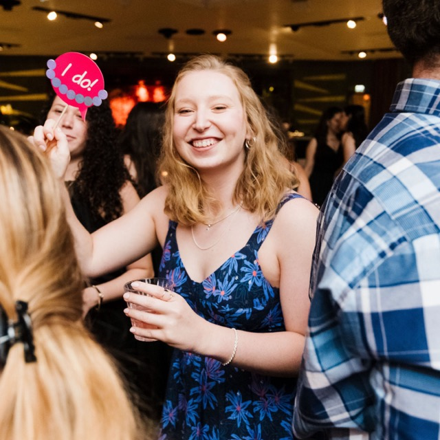

בחירת פרחים
חתונה בלי סידורי פרחים היא כמו לארגן מסיבה טובה בלי תאורה, אפשר להסתדר בלעדיה, אבל היא עושה את כל ההבדל בין אפשר למושלם.
בין אם הסידורים קטנים או גדולים, צבעוניים ומשוגעים או סולידים וקלאסיים, יש אפקט לפרחים, שאף עיצוב, חומר או אמצעי אחר לא יוכלו להשיג.
באמצעות בחירה נכונה של שילוב פרחים, סקאלה צבעונית מתאימה, התאמה מדויקת לכלים, גודל וכמות.
מתנות לאורחים
מי לא רוצה שיזכרו את האירוע הכי חשוב בחיים שלו? כל אחד היה רוצה שכל המוזמנים לא יפסיקו לדבר על האירוע וכמה מושלם הוא היה.
יש להקדיש מחשבה גם לגודל המתנה ולעובדה שהיא עלולה להקשות על האורחים או שהם עלולים לשכוח אותה באולם.
ניתן לחלק את המתנות מראש בכניסה, להניח אותן על הצלחות כך שהאורחים יקבלו אותן עם כניסתם לאולם או לחילופין, להעניק אותם עם עזיבת האורחים את האירוע.
אביזרים לרחבת הריקודים
למה בכלל יש זוהרים לחתונות? פשוט מאוד, כל חפץ זוהר ונוצץ לא רק מאיר את הרחבה בשלל צבעים, אלא גם מכניס את האורחים לאווירה חגיגית יותר.
את הזוהרים אפשר יהיה גם לפזר על השולחנות או לחלק בין השולחנות בכדי לעודד את האורחים שיושבים לקום אל רחבת הריקודים.
מה דעתכם לבחור אביזרים בצבע אחד המשתלב בקו העיצוב של המתחם? דווקא האחידות בחלוקת האביזרים תוכל להוסיף לאירוע הרבה סגנון.